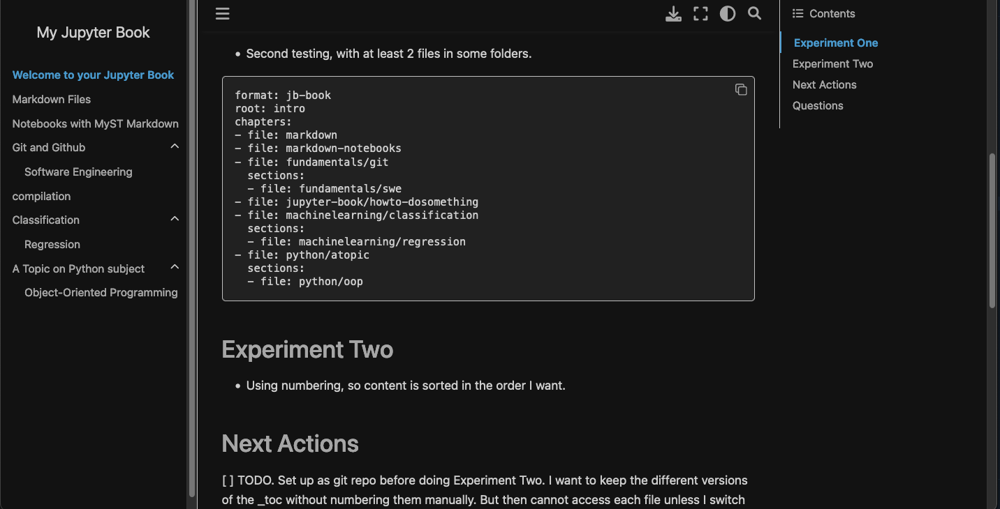

Welcome to your Jupyter Book#
This is a small sample book to give you a feel for how book content is structured. It shows off a few of the major file types, as well as some sample content. It does not go in-depth into any particular topic - check out the Jupyter Book documentation for more information.
Check out the content pages bundled with this sample book to see more.
Remember that the Download button to save as .html or .pdf would “print” only the current html page, not the whole jupyter-book.
Experiment One#
Added folders by
Subjectandtopicmarkdown files to see how it is compiled into a book.Not using numbering, so content is sorted alphabetically
First testing. With one file in each folder.
format: jb-book
root: intro
chapters:
- file: markdown
- file: markdown-notebooks
- file: fundamentals/git
- file: jupyter-book/howto-dosomething
- file: machinelearning/classification
- file: python/atopic
Second testing, with at least 2 files in some folders.
format: jb-book
root: intro
chapters:
- file: markdown
- file: markdown-notebooks
- file: fundamentals/git
sections:
- file: fundamentals/swe
- file: jupyter-book/howto-dosomething
- file: machinelearning/classification
sections:
- file: machinelearning/regression
- file: python/atopic
sections:
- file: python/oop
moved .md to file: section resulted in errors.
Result#

Experiment Two#
[ ] TODO. Need to figure out how to do .md files as links and not in Topic. [ ] TODO. Using numbering, so content is sorted in the order I want.
Next Actions#
[x] TODO. Set up as git repo before doing {ref}experiment-two
note: ToDos need to be
in CAPS
have a checkbox
before it is gathered by the TODO extension in a tree
Questions#
[x] TODO, if want to convert one markdown file or several files into an article, how do I go about doing that?
[x] TODO. Is myst errors due to some missing package?
It was perhaps because _config.yml was renamed to _config_v0.yml. Made a copy with my edits. No more errors.
Yes, missing packages needed :
jupytext
And then to run the command, to use MySt version of markdown, the .md file need the yaml frontmatter
jupyter-book myst init today-i-learned/intro.md --kernel python3
And to use myst syntax instead of markdown
{ref}MyST syntax lecture <myst_cheatsheet>`
So, for my error: {ref}experiment-two
[ ] TODO. How to generate .pdf instead of html?
Need to install more packages. Either
pyppeteerortexlive